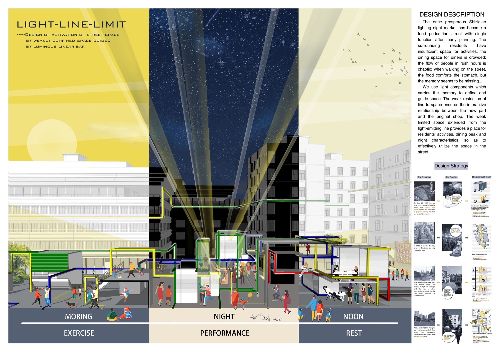
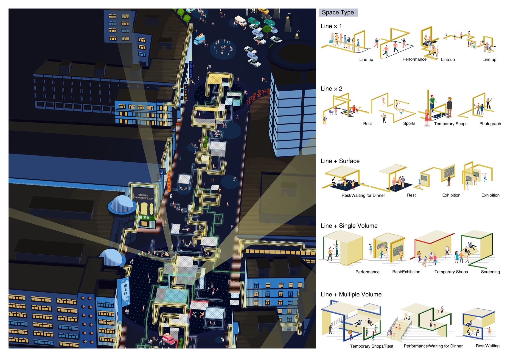
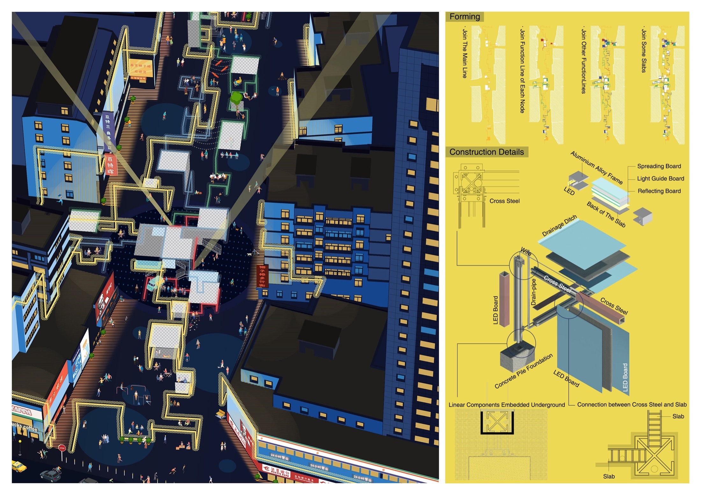

Architectural installation · Nanjing · 2019
LineLight
Limitate
Framing space to recall what once illuminated it.

A soft boundary made of light.
This site-specific installation reactivates a once-vibrant night-market setting on Lion Bridge Pedestrian Street in Nanjing. Linear rods and integrated light strips create new spatial boundaries while gently guiding pedestrian movement.
Different colours define zones for pausing, transitioning, and gathering. Light works both as wayfinding and as an echo of the street's past—once animated by lanterns and now fading into memory.
- Year
- 2019
- Location
- Lion Bridge Pedestrian Street
Nanjing, China
Site, sequence, atmosphere.
The proposal moves from an analysis of pedestrian flows and the street's night-market memory to a sequence of lightweight frames. Lighting changes the role of each frame across movement, pause, and gathering.

